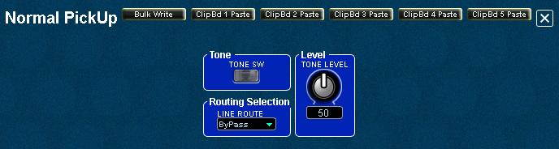

Index
Normal Pickup
This
is the Normal Pickup parameters panel where you can enable or disable
the the regular guitar pickups, set the Normal Pickup level in the overall mix, and
specify which effects routing structure to use for the guitar pickups.

Tone
- TONE SW - Enable or disable the Normal Pickup using this as an ON/OFF switch.
Routing Selection
For each KATANA patch, the tone modules have separate routing capabilities:
- Tone modules (PCM Synths 1/2, COSM Modeling, and Normal Pickups)
can be routed to enter the effects chain at either the MFX effect
module input, at the Amp Modeling input, or to bypass both to connect at
the DELAY/CHORUS/REVERB inputs.
Level
- TONE
LEVEL - Set the volume level for the normal pickups using this knob.
You can adjust the level of the normal pickups against the PCM Synth
1/2 and COSM tones.